第12章 缺口
在图表技术分析派的字典中，“缺口”代表没有股票换手的一个价格区间。“缺口”是一个必须记住的有用的概念，可以帮助解释其后的技术形态，从图12-1～图12-13可以看出。
当某个交易日某只股票出现的最低价格高于前一个交易日出现的最高价格时，日线图中就会形成一个缺口。在绘制这两天的交易图形时，这两天的交易区间不会有重叠的部分，而是会出现一个价格缺口。如果某一周某只股票的最低价格高于前一交易周出现的最高价格时，周线图中就会形成一个价格缺口。周线图上的跳空缺口也会出现，但明显不如日线图上出现的跳空缺口多。月线图上的跳空缺口很少出现在交易活跃的个股走势中。仅有当恐慌性抛盘出现在月末且持续到下个月初的情况下，才会出现月线图上的跳空缺口，这极其罕见。
12.1 哪种缺口更重要
从开始有股票技术图像的时候，缺口就为人们所注目。价格趋势图形中的“窟窿”很是显眼。观察者认为它们重要，想要对它们的出现附加一定的意义，这很自然。但是，这样做的结果是不幸的，因为在对它们的解释方面，很快就积累起一大堆让人摸不着头脑的“规则”，其中有的几乎被人们当作宗教信条，有些浅薄的读者引用这些规则来说明他们的见解，尽管他们并不知道这些规则在什么时候以及为什么会起作用（而且，不用说，正如同所有的迷信一样，完全无视那些规则不起作用的例子）。我们说这种情况是不幸的，倒不是因为缺口“规则”是错的，而是因为这种盲目的接受阻碍了对缺口含义的真正理解，妨碍了为了在交易中使用缺口而建立起一个更合逻辑的基础。
认为“是缺口就必须回补”其实是最常见的一种迷信。甚至有这种说法：如果缺口没有在3天内被回补，就会在3周内回补，如果没有在3周内回补，就会在3个月内回补。诸如此类的说法很多，都认为缺口必须回补，如果没有回补，之后的走势就不足以为信。这是不对的。
12.2 缺口回补
首先，到底什么是缺口回补？假设有一只股票，连续上涨了很多天，从20美元涨到了21、22、23、24美元，且有一天收于当天的最高价，假设是25美元。第2天该股开于26美元，然后继续上攻。这样的话，25美元和26美元之间就形成了一个缺口。然后假设股价继续上涨至28美元，然后止步回调，并一路跌至25美元。这次回调最终弥合了缺口区域（25～26美元的区间），也就是缺口得到回补。总的来说，缺口回补是指股价走势回调或修复时对前期出现的缺口的弥合。
是不是一定要缺口回补后股价才能走远呢？当然不是。缺口是不是最终一定会回补呢？可能是。如果不是在下一次短线回调时回补，就可能会在下一次中线回调时回补，或者是下一次反向长线趋势时回补。但那可能是数年以后了，这并非普通投资者能够关注的事情。假设一个投资者于1929年10月21日以260美元的价格买入切萨皮克-俄亥俄铁路公司的股票，如果他指望看到该股前一个周五形成的缺口（266～264美元的缺口）得到回补的话，需要等差不多7年才能见到这一天。该股股价直到下一轮长线牛市高点时才达到与成本价差不多的价格（此时该股65美元，1930年该股做了1∶4的分拆）。同时，该股股价在1932年时已跌至该投资者成本价的1/6。实际上，1929～1930年的股价走势图上出现了数百个缺口，此后都没有被回补，而且可以肯定地说，再也不会得到回补了。
其实，缺口被回补的概率跟股价回到曾经交易过的任意 价格水平的概率是一样的。
还有一点：股票交易时形成了成千上万的价格缺口，其中一些缺口还很大，却完全没有出现在标准的日线图上，因为它们形成于盘中 ，并不形成于一个交易日的收盘价和第2个交易日的开盘价之间。这种盘中缺口被完全忽视了。尽管这些盘中缺口的意义常常比日线图 上的缺口更重要，缺口理论家却对它们视而不见。实际上，严格定义的箱体或直角三角形突破时均伴有一个重要的缺口，但这些缺口很少反映在日线图中。
我们在这里不胜其烦地批评关于缺口的一些误区，因为我们希望读者对这一话题持有开放的态度，不要被一些先入为主的观念所左右，认为缺口带有神秘色彩。但是，有些缺口确实有重要的技术意义，对图表分析师评估市场趋势非常有用。现在让我们来学习如何利用缺口这种技术形态。
12.3 除息缺口
首先我们必须排除一些没有 任何技术意义的缺口。一个1/8美元的缺口只代表股价的最小变动单位，显然没有意义。同理，如果1/4美元和1/2美元的缺口出现在高价股（如分股前的诺福克西部铁路公司）的走势中，也只能代表正常或较小的连续竞价价差。简单来说，要引起技术派的重视，缺口必须比正常的股价变动更大。另一类缺口经常出现在流通盘较小的中高价股中，这类缺口也没有预测意义，很容易在图表上找到。如果某只个股的图表上经常出现大量缺口，那么可能它们都不具有特殊意义。
最后，在股票除权、除息时出现的缺口也没有技术意义。这类缺口之所以出现并不是因为供需关系的变化，而是因为股票的实际账面价值经历了突然的、不可逆的改变。
排除了不具有技术意义的这些缺口后，剩下的是一些不频繁出现且和除息无关的缺口。有些股票交易频繁、价差小，往往呈现出“连续”的股价走势。以纽约中央铁路公司为例，哪怕缺口只有1美元也是不同寻常的，往往具有预测意义，值得投资者密切关注。
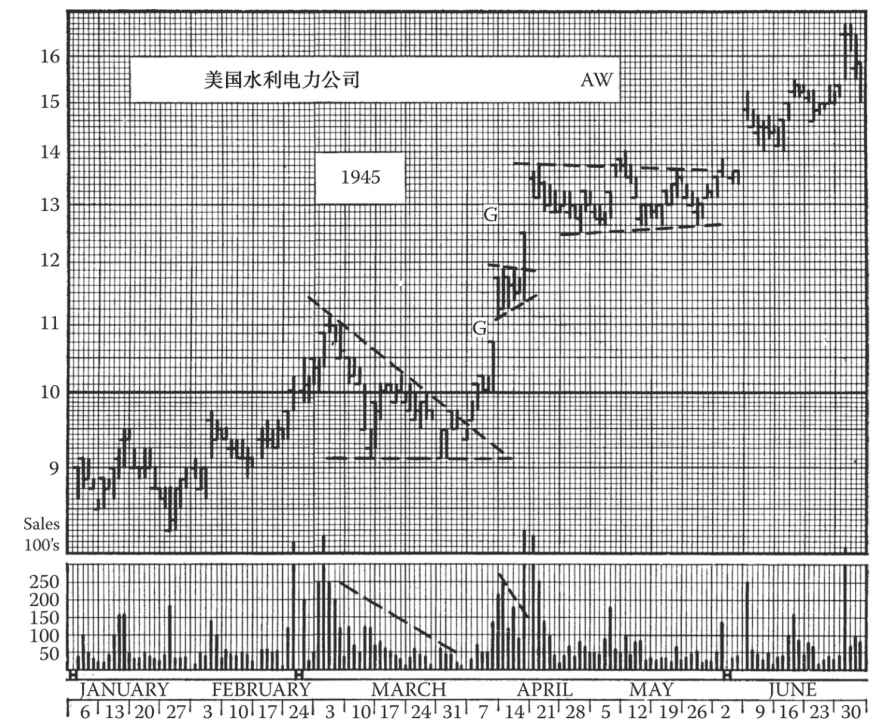
图12-1 美国水利电力公司的股价在1945年4～6月出现了多个不具技术意义的形态缺口。图中，两个标有“G”的大缺口属于持续或逃逸缺口。请注意，缺口出现当天，收盘价都是当天的最高价或在最高价附近。这两个缺口在之后2年的时间里都没有被回补。
此图另一个有趣的地方是3月开始出现的下降三角形态一直没有完成。这种令人沮丧又具有欺骗性的走势一直持续到4月7日的缺口出现。
4月中旬出现的旗形预示了从9½美元到14美元的股价变动。两个缺口位于旗面的两边，测算了这两段旗杆的一半
为介绍方便，我们把这些缺口分为4类：普通缺口（又称形态内缺口）、突破缺口、持续缺口（又称逃逸缺口）以及衰竭缺口。
12.3.1 普通缺口
这类缺口常常出现在某个交易区域或震荡形态中，因此得名。本书前几章讨论的所有震荡形态（不论是反转还是整固形态），都伴随着成交量的萎缩。这个特征在三角和箱体形态上更加明显。此外，在这些形态中，成交常常集中在顶部和底部，即支撑线和阻力线附近，而中间的区域则像是“荒芜之地”，成交量甚少，因此时常出现缺口。你可以在第8章和第9章的图例中找到不少普通缺口。
这类缺口通常几天内就会回补，回补往往发生在形态完成并被突破之前，但也有特例。有时，缺口会出现在形态突破前的最后 一波走势中。在这种情况下，缺口会很久都得不到回补，也没有任何必须回补的理由。
普通缺口的预测意义几乎是零。它们之所以对技术派来说有一定意义是因为它们有助于辨识形态本身，也就是说这类形态的出现表示震荡形态正在形成。如果某只个股的股价先从10美元涨到20美元，回调至17美元后，又回升至20美元，并在最后一波回升中出现缺口，那么我们就可以推测股价可能会继续在17～20美元的区间中震荡。这个结论很容易得出，有时还能帮短线交易者获利。
普通缺口更多地出现在整固形态而不是反转形态中。所以，如果箱体或对称三角形态中出现很多缺口，那么也进一步证明该形态最终会演变成整固而非反转形态。
12.3.2 突破缺口
突破缺口也常出现在股价震荡形态中，多见于震荡形态构筑完毕、股价突破形态之时。任何一次对形态水平 界线（如上升三角形的上界线）的突破都可能留下一个缺口。事实上，大部分此类突破都会产生缺口。如果我们考虑一下平顶形态的成因，就不难理解为什么会出现突破缺口。例如，上升三角形是由源源不断的买盘遭遇在固定价位出货的大量卖盘而形成的。假设该出货价位是40美元。其他股东也许本希望在40½或41美元卖出，但现在看到股价屡次冲击40美元失利，就或者也在40美元卖出，或者持股待涨（预期股价会在突破40美元后飙升）；也就是说，这些股东的卖出价要么调低，要么调高。结果是在图上形成一段“真空”区域，即形态上方一段卖盘稀少的区域。所以，当这个上升三角形中40美元价位的卖盘最终被全部消化后，后续的买家也许无法在40⅛～40¼美元的区间内买到股票，只得将报价提升1美元或更多，从而造成突破缺口。
如本章前文所述，每当股价有效突破横盘震荡形态时，几乎都会造成此类缺口，但它们往往不体现在图上，原因是这些缺口发生在盘中 ，而不是某日的收盘价和后一日的开盘价之间。突破缺口还见于其他反转及整固形态的突破之时，例如，它们可能出现在股价突破头肩形时，也可能出现在股价突破趋势线时。趋势线将在后文详述。
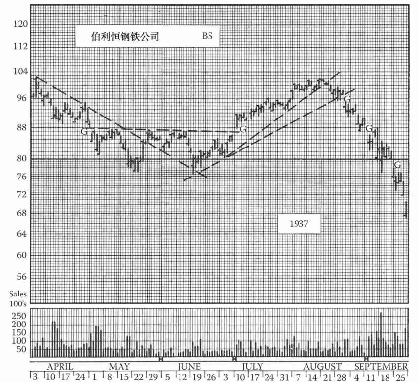
图12-2 这张图上，伯利恒钢铁公司股票7月5日留下了一个较大的突破缺口，股价有效突破复杂的底部形态，展开了7～8月的中线反弹行情。（请将这张图与图7-14对比。）而到了8月26日，该股向下击穿趋势线，形成另一个突破缺口。图上9月7日的缺口是除息缺口，而9月18日的缺口则是击穿支撑位的缺口。4月26日的缺口是逃逸缺口，它使整个4～6月的复杂底部成为“岛形”
那么，突破缺口有怎样的预测价值？首先，它们会引起市场对突破的关注。当股价以显著跳空的方式脱离形态区域时，这几乎可以肯定是一次真突破，因为假突破很少伴随着缺口。其次，与不带缺口的突破相比，带缺口的突破意味着推动股价突破形态的买盘（或卖盘）更强劲 ，故可预测股价会上涨（或下跌）得更快、更远。这一推断合乎逻辑，且得到了大多数实际情况的验证，但偶尔会有例外发生。不管怎样，在其他因素相同的情况下 ，当两只股票同时突破上升三角形时，我们应选择跳空突破形态的那只。
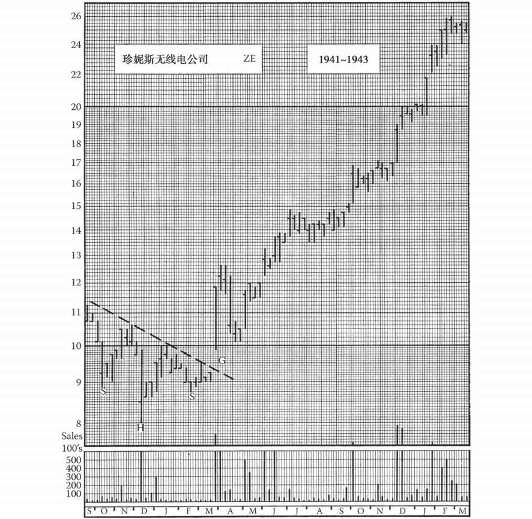
图12-3 珍妮斯无线电公司股票在1942年年初突破头肩底形态，在周线图上留下了一个强势突破缺口。请注意缺口后的成交天量，它表明缺口不会迅速回补。4月的回调未能回补缺口。到了14年后的1956年，这个缺口还留着
除了可以判断股价的动能较强外，突破缺口不具有其他预示意义。接下来的问题是：突破缺口是否会在较短的时间内回补？我们是否应该推迟买入、等候回补？
为了回答这个问题，必须考察缺口前后 的成交量。如果在股价跳空突破原有形态时成交量放大，而在缺口形成后成交量萎缩，那么接下来的短线回调就有可能（也许有50%的概率）达到原有形态的突破位，从而回补缺口。另一方面，如果缺口形成后成交量随着股价的继续前行而放大，那么缺口在短期内回补的可能性就较小，此时股价即便回调，也不会 回到缺口内。
（追求非黑即白的明确答案是人的天性。然而，本书的作者从未 发现过绝对正确的技术法则。有法则就有例外，所以务必时刻 提防例外的发生。许多例外走势的成因是股市的大环境与个股的技术趋势相悖，因此在盯个股的同时别忘看大盘。）
当突破缺口出现于盘中时，日线图显然无法反映成交量的分布状况。此时需要查阅当日的具体成交数据。（编者按：现在这些数据很容易获得，请见附录D“资源”。第9版编者按：现在流行的K线图已能显示盘中突破缺口。）若成交量变化趋势不明显，则最安全的假设是股价只有在到达缺口形成前的形态所预示的最小目标位（涨跌幅达到道氏理论的中线级别）后，才会回补突破缺口。
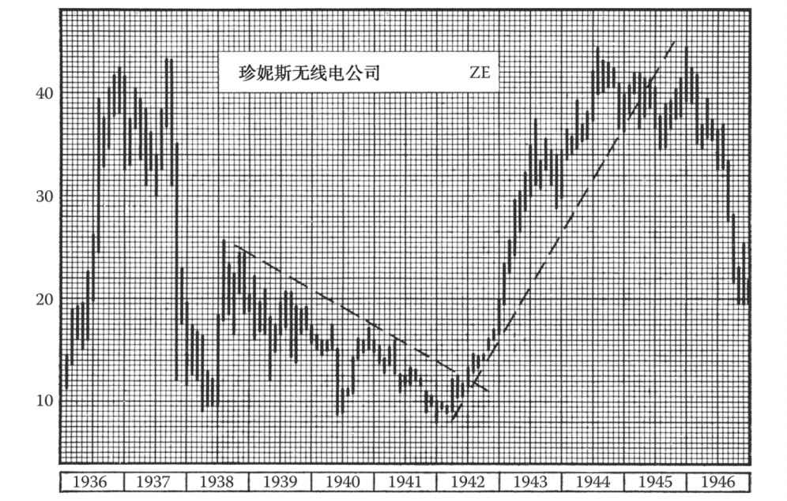
图12-4 珍妮斯无线电公司的这张月线图可与图12-3相互参照。图上有一个清晰的头肩底
12.3.3 持续或逃逸缺口以及测算规则
持续或逃逸缺口不如普通缺口和突破缺口常见，但具有重要得多的技术意义，因为它们对走势的幅度有大致的预测意义。因此，它们有时候也被称为“测量”缺口。
普通缺口和突破缺口都与震荡走势的形成相关，前者常见于震荡形态内，后者则发生于股价脱离震荡形态时。逃逸缺口和后文将讨论的衰竭缺口则与震荡形态无关，而是发生于直线式的暴涨或暴跌时。
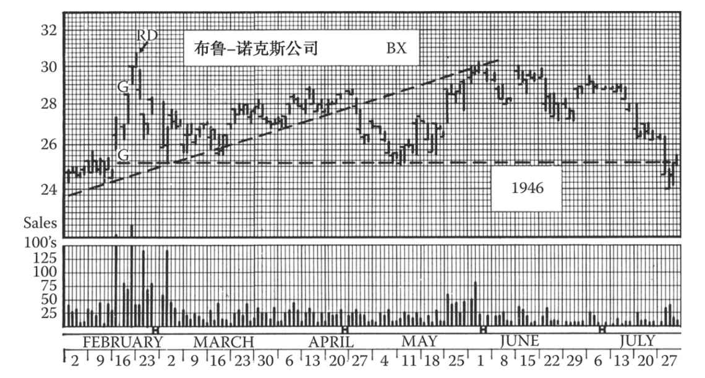
图12-5 布鲁-诺克斯公司1946年上半年的走势有几个有趣的技术特征。该股1945年12月股价从19美元飙升至25美元，其后走出了一个为期9周的箱体整固形态，上图可以看出此箱体的最后阶段。1946年2月11日该股形成了一个典型的突破缺口，向上跳跃突破形态。4天后，另一个缺口形成，成交量更大，并报收于当天的最高价。这看起来是一个逃逸缺口，根据前文所述规则，股价可以继续涨至32美元。（如果按照箱体的测算规则，只能涨到31美元。）但是，第2天股价走出了一个单日反转，从31美元跌至30美元。接下来的一个交易日股价继续下跌并回补了2月15日的缺口，因此这个缺口应被重新判断为衰竭缺口。此后股价回落至9周箱体的支撑位，然后逐步沿着一条已形成的中线上升趋势线缓慢上移，于4月24日向下突破该趋势线，再次回到25美元支撑位。5月，该股发起了另一场上攻，股价逼近前期被向下突破的趋势线，触及30美元。这已经是最后一搏了。7月底，25美元附近形成的“谷底”被穿透，并形成了一个长线双顶形态。再回看2月15日的缺口，我们可以看出，要观察缺口形成后两三天的走势才可以判断该缺口是持续缺口还是衰竭缺口
在一段建仓区域后，股价往往会先缓慢上涨，再加速上攻1～2周，然后随着获利盘增加而开始失去动能。成交量在第1次跳空时达到峰值，在涨途中间的位置慢慢减少，然后再次飙升至极高的水平，直至涨势停滞。在急涨的过程中，形态出现逃逸时，股价随成交量迅速变化，很有可能出现较大的缺口（急跌走势也同样适用）。这种缺口经常出现在前一个形态突破至下一个反转日或震荡区间开始的走势中间。因此，出现持续或逃逸缺口时，我们大致能估算出其后走势的目标位，一般会大大超过缺口前这一段走势的高度 。
因为就点数来看，上涨运动有超出这条规则从算术上隐含的价格水平的倾向，下跌运动受到的限制则较为严格，因此，这个借缺口来衡量的规则在直接用在半对数标度的图像上的时候就特别有效。在算术标度的图像上，在上行的方向稍微多看一些，在下行的方向则稍微少看一些（无论是哪种情况，在理论目标同实际目的之间留一些空间，都是聪明的做法）。
回看图表时，逃逸缺口很容易被找到，但我们的任务是在缺口刚出现时就认出它们。显而易见，即便混淆了普通缺口和突破缺口也是没有危险的。只要缺口出现在股价突破某一震荡形态（或穿透重要趋势线、支撑位或阻力位）后的快速上涨或下跌时，都有可能是逃逸缺口。那么接下来要做的，就是把逃逸缺口和衰竭缺口区分开来。一般来说，需要观察缺口形成后那个交易日的股价和成交量才可得出可靠结论。
12.3.4 两个或多个逃逸缺口
在详细探讨过衰竭缺口后，我们更容易根据特征来区分逃逸缺口和衰竭缺口。在此之前，我们必须提一下另外一种情况，就是在一段急涨急跌中出现2个甚至3个（尽管很罕见）都可以明显被确认为持续或逃逸缺口的情况。这种情况确实不常见，特别是不太可能出现在交投活跃的大盘股，但有可能出现在市值较小的股票，这些股票在“火箭式”的几天跳涨过程中可能出现两个以上的缺口。在这种情况下，唯一具有实际意义的问题在于：测量中点应该在哪里？我们没有一个简单的答案，但如果仔细研究图表，特别是看成交量的趋势，就可能找到答案。请记住，这种走势的中点常常发生在价格和成交量都最为活跃的时候（这个时候才能产生缺口）。如果有两个缺口，那么整段走势的中点很有可能是这两个缺口的中间位置。仔细看图，试着在脑海中将图表“平均划分”一下，看看如何应用你的测量规则。但是每一个后续缺口都更有可能接近衰竭，因此你在判断时不妨保守一些，不要对股价还会跳空抱有太大期望。
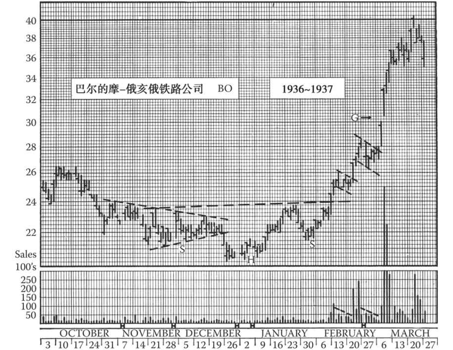
图12-6 这是一个符合规则的逃逸缺口的好例子。巴尔的摩-俄亥俄铁路公司股价从1936年年末26¼美元开始回撤，形成了一个头肩底（左肩体现为一个三角形），并于1937年2月6日突破该形态。此后股价迅速走出了一个旗形，并预示后期将上攻至28美元。当股价达到28美元时，又形成了另外一个旗形，并进一步预示股价将达到30¼美元以上。这个目标实现后，股价于3月3日形成一个缺口，成交天量。缺口后两天的走势确认了该缺口是一个持续或逃逸缺口。因此预示着更大的上涨（从头肩底的颈线开始测算），目标位为37美元以上。该股此轮牛市顶为3月17日达到的40¼美元。这里缺口测量规则应该用来预测什么时候离场，而不是什么时候入场
12.3.5 衰竭缺口
突破缺口预示着趋势的开始；逃逸缺口出现在趋势中期，预示着趋势的快速延续；衰竭缺口则出现在趋势的末期。只要根据缺口在趋势中的位置就可以很快地区分突破缺口和逃逸缺口，但衰竭缺口和逃逸缺口并不总是能够立刻区分开来。
衰竭缺口和逃逸缺口都与股价的暴涨或暴跌有关。我们之前描述过，逃逸缺口一般出现在趋势中期，股票成交先迅速加快，然后减缓，最后随着阻力的不断增大而完全停止。但有时在“火箭式”的涨势中，阻力不会逐渐增大，趋势也不会放缓，而是会继续加快，直至天量卖盘（在跌势中则是遭遇买盘）突然出现，造成成交量飙升，随后涨势戛然而止。在此类走势中，最后两天的股价之间可能会出现一个大缺口。我们将这样的缺口称为衰竭缺口，因为股价走势仿佛在最后的冲刺中用尽了力气，无以为继。
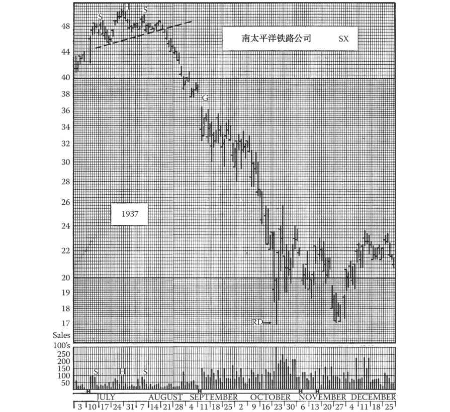
图12-7 恐慌性抛盘常常产生大的逃逸缺口。此图中9月7日的缺口，从大小、成交量和后续走势来看，都是一个可以预测目标位的逃逸缺口。其预测的目标位是26美元以下。此图中出现的其他缺口都明显是普通缺口
要在火箭式的暴涨暴跌中分辨持续缺口和衰竭缺口，最好的方法就是观察缺口出现后的走势，当然，此前的技术图表也会给出一些线索。如果在缺口出现后成交达到天量，但是此前的价格趋势却不再延续，那么这个缺口很有可能是衰竭缺口。如果该缺口在第2天演变成了单日反转（见第10章），收盘价回到缺口边缘，那么我们就更有把握说这是一个衰竭缺口。
在缺口出现之前的走势也会给出一些线索。如果在当前走势中，股价已经完全达到了上一个股价形态或震荡形态的测算目标，那么此时出现的就更有可能是衰竭缺口，而非持续缺口。同理，如果上一个形态的测算目标还远没有达到，那么缺口就更有可能是持续缺口。此外，衰竭缺口几乎不会在此段走势中第一个出现，在衰竭缺口之前至少会出现一个持续缺口。因此，除非其他更重要的指标表明有特殊情况，否则我们可以认定，在暴涨暴跌走势中出现的第一个缺口是持续缺口。但我们应该对之后出现的缺口持怀疑态度，尤其当某个缺口比上一个缺口更大时。
我们在上文中将衰竭缺口形容为大缺口。这里的大小是一个相对概念；我们不可能给出精确的数字。但你也不必因此感到困扰，只要有点经验，你就会知道，自己关注的个股的正常缺口大小。
逃逸缺口通常在很长一段时间里都不会回补，直至股价走出相反的长线或中线行情。但衰竭缺口一般在2～5天内就会得到回补，这也是区分衰竭缺口和逃逸缺口的最后一个线索。（这也打破了人们对于“缺口必须得到回补，走势才会持久”的迷信。逃逸缺口并不会得到回补，但股价走势仍然会延续很长一段时间。而衰竭缺口的回补实际上表明当前趋势已经结束。）
衰竭缺口本身不应被看作反转的迹象。它“叫停”了当前的趋势，但趋势停止后股价往往会走出某种特定的形态，然后再反转或延续缺口出现前的趋势。但实际上，几乎在每个衰竭缺口出现后、新趋势确立前，股价都会经历一波短线回调或整理来提醒人们尽快离场。（如果股价之后延续了缺口出现前的趋势，那么投资者再进场也为时不晚。）
12.4 岛形反转
我们在第10章结尾处提到过一种反转形态：岛形。这种形态不常见，其本身也不具有长线技术意义（也就是说不代表长期顶部或底部），但它预示着股价将完全回吐前期的涨幅（或跌幅）。
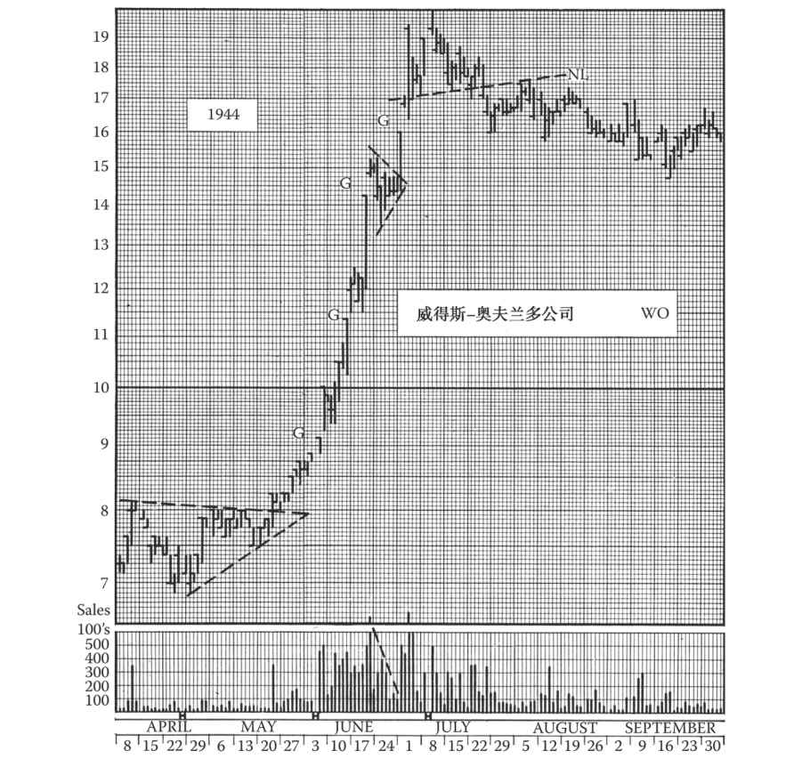
图12-8 威得斯-奥夫兰多公司的股价在1944年6月经历暴涨，这当中出现了几个小缺口。前两个缺口太小，没什么技术意义。6月16日出现的缺口稍大一些，是一个衰竭缺口。股价在当天窄幅震荡，随后出现了一个小旗形整固形态。就股价而言，6月27日的缺口也应该是衰竭缺口，但成交量却在当天萎缩，而不是达到天量。6月28日，股价再次蹿升，此时我们应把27日的缺口重新定义为逃逸缺口，股价上涨目标为18¼美元（这个目标已经达到）。请注意之后出现的头肩反转形态和中线回调
岛形反转可以这样来描述：股价经历了一段快速上涨（或下跌）后，跳空形成一个衰竭缺口，然后走出一段窄幅震荡，接着往相反方向跳空形成一个突破缺口，随后快速下跌（或上涨）。两个缺口之间的时长可能只有一个交易日（此时往往发展成单日反转），也可能延续几天或一周左右，呈现短线窄幅震荡格局，并且通常伴随着较大的成交量。岛形两侧的缺口处于差不多的价位（应有一定程度的重合），整个形态看起来就像被两个缺口隔开的孤岛。
图12-9 A.O.史密斯公司的流通盘较小，日线图上满是缺口。但在该周线图上，A.O.史密斯公司的股价在1946年9月出现了一个大缺口，显然具有一定技术意义。这是一个逃逸缺口，之前该公司股价曾在68美元附近震荡了8周，缺口的最小测算目标位是44美元，最后股价也确实跌破了44美元
我们前面说过岛形本身不是一种长线 反转形态，但岛形常常出现在更大形态的内部、长线或重要中线趋势的转折点上，例如头肩顶的头部。出于同样原因，岛形有时出现在三角形或箱体内短线波动的高点或低点，此时岛形两侧的缺口其实更应被视为普通缺口。
我们将在下一章具体讨论岛形的成因（岛形两侧的缺口为什么出现在差不多的价位上）。现在只需说明一点：如果某一段价格区间内过去很少有股票换手，那么股票能在该区间内快速上涨或下跌，因为当前的持股人都没有“既得利益”。
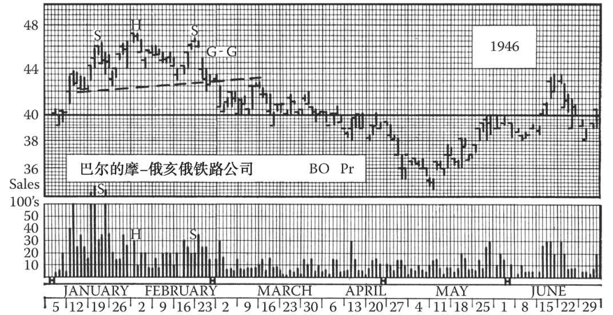
图12-10 该公司股价走势的长线反转由一个头肩顶形态开启，在头肩顶的右肩出现了一个小的岛形。这个形态仅仅进一步印证了股价转熊的趋势
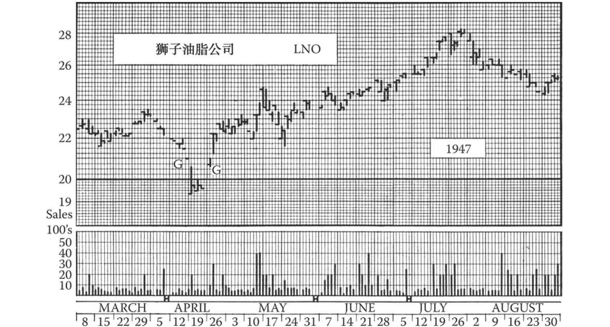
图12-11 岛形震仓常见于流通盘“较小”的股票。岛形的成因很难解释，但其预测意义显而易见
有时第2个缺口（即完成岛形的突破缺口）几天后就迅速回补，但更多情况下却并非如此。在少数情况下，第1个缺口（开始构筑岛形的衰竭缺口）在第2个缺口出现前就得到回补，使得岛形呈现为V形（若在顶部的话），而且岛形与其前后的形态之间没有明显的隔断。然而不论岛形的变体如何，对其的技术解读都是一样的：岛形出现前的短期涨跌幅应被完全回吐。
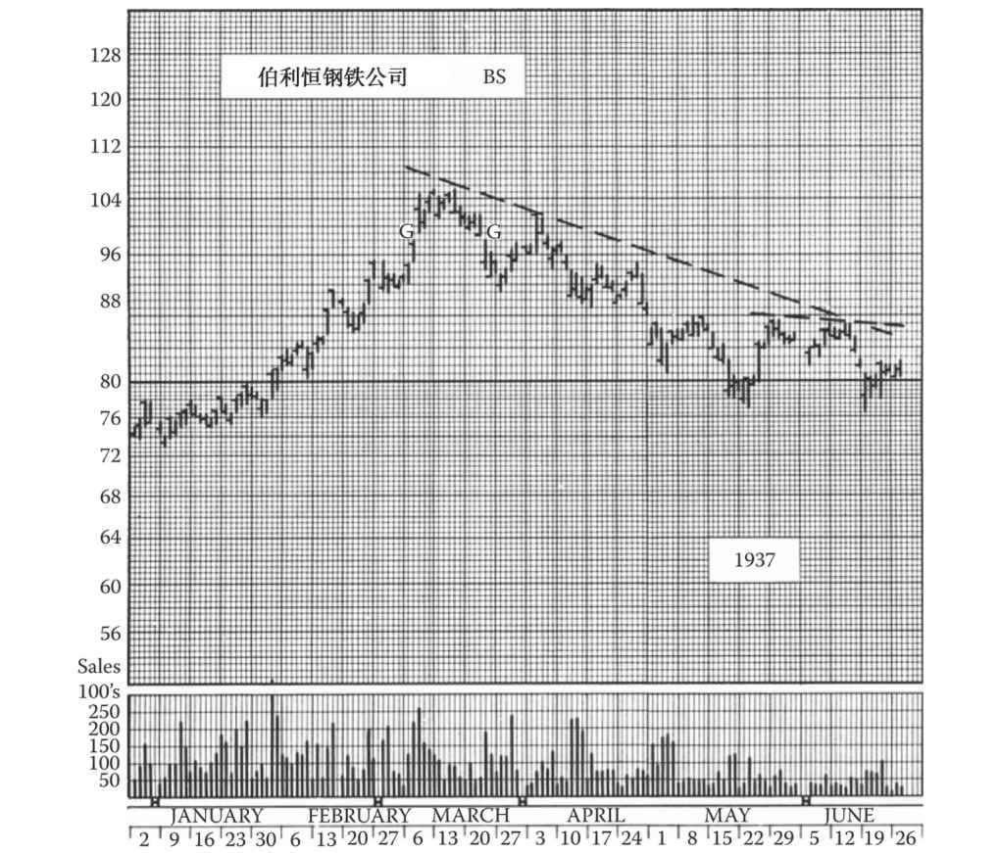
图12-12 1937年，伯利恒钢铁公司股票在长线顶部构筑了一个经典的岛形反转形态，但随后在3月30日出现了异常强劲的反弹，一周后更是大幅超越了第2个缺口，使得那些依据岛形的技术意义于3月19、20日在95美元上下离场或卖空的投资者大感意外。但是，股价的最终走势还是符合最初的预测。这个例子说明了一条基本原则：当图表上出现一个清晰、完整、具备明确技术意义的形态时，不要被随后出现的具有相反技术意义的短期形态迷惑，而应静观其变。图12-2展示了该股的后续走势，即又一个岛形。请比较两个岛形的成交量
面对岛形，投资者一般很难操作，因为当岛形形成时，股价的回调已接近到位。投资者如果认为第1个缺口是衰竭缺口，就会在第2个缺口形成、岛形出现之前行动。对于图表分析者来说，岛形的最大作用也许是辅助投资者判断可能出现的趋势反转。
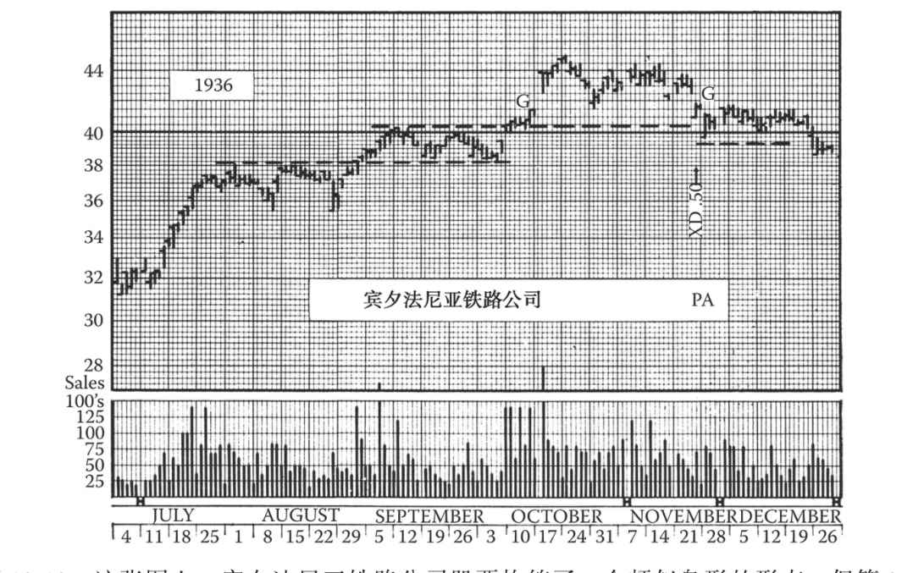
图12-13 这张图上，宾夕法尼亚铁路公司股票构筑了一个颇似岛形的形态，但第2个缺口实际上是11月20日每股除息0.50美元造成的，因此其技术意义必须打个折扣。由于这次除息，40美元处的支撑线（见第13章）需要下移0.50美元。所以，该支撑位并未在12月被跌破。该股后于次年3月涨到了50美元以上
12.5 平均指数的缺口
几乎所有的平均指数都会出现缺口，但其概率低于个股。当指数构筑缺口时，其成分股大都也同时构筑缺口。在平均指数的图表上，普通缺口、衰竭缺口、岛形都很少见；突破缺口和逃逸缺口出现的数量多一些，但幅度比个股的突破缺口和逃逸缺口小。造成某只个股形成衰竭缺口的条件基本上不会传导至太多其他股票，因此平均指数基本上不会出现衰竭缺口。
对平均指数缺口的技术解读大致与对个股缺口的解读相同。笔者从未发现平均指数缺口的效力超过活跃个股缺口的效力。
因成分股最多而最具代表性的市场指数最少出现缺口，即便出现缺口幅度也极小。编者按：不过，波动性很高的纳斯达克指数时常出现缺口。
（建议读者在学完第13章关于支撑与阻力的原则后回顾本章。）
（第9版编者按：关于缺口，实际上我们都说完了，也没有必要补充当代的例子。但缺口是挺有意思的，读者可以看看图11-11和第16章中年代较近的例子。）